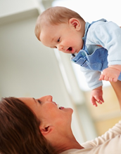
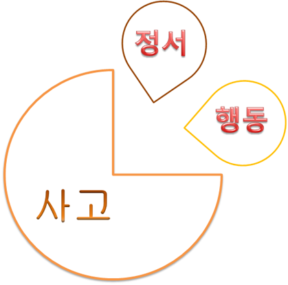
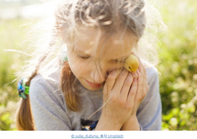

인간은 기쁨이나 슬픔, 두려움과 불안과 같은 기본 정서를 가지고 태어난다.
정서는 자주 변하고 빈번하게 나타낼 수 있도록 해야 한다. 정서는 내적·외적 자극에 직면하면 발생하거나 자극에 수반되는 생리적 변화나 애정, 기쁨, 불안, 두려움 등 여러 가지 감정이다. 아동은 자신의 상태를 부모 및 성인들에게 특정 자극으로 알림으로써 자신을 보살피게 하는 기능을 한다. 부모 및 성인들의 행복이나 기쁨, 분노나 짜증 등 모방과 강화를 통해 자신의 정서를 표현함으로써 점차 사회·문화적으로 용인된 방식으로 표현하면서 환경에 적응해 간다. 모든 정서는 유기체가 환경에 적응적으로 행동하는 것을 도와주는 기능을 가지고 있다. 정서는 개인의 삶을 유지할 수 있도록 도와준다.

정서행동의 교육적 성취 능력
아동기의 정서행동(emotional or behavioral disorder)라는 용어는 학교생활에 있어서의 행동이나 정서적 반응이 적절한 나이, 문화, 민족의 표준으로부터 매우 달라서 결과적으로 학업, 사회성, 개인적인 호기심을 포함한 교육적 성취에 부정적인 영향을 미치게 되는 것이며, 다음과 같은 특성을 보인다.
① 일시적 현상으로 나타나는 것이 아니며, 환경 내의 스트레스성 사건에 대해서 예측이 가능한 반응을 보인다.
② 두 개의 다른 환경에서 나타나고, 적어도 그중 하나는 학교생활과 관련된 개별 중재에도 불구하고 지속적으로 나타난다.
③ 공격적이고 겉으로 드러나는 행동을 보이거나 미성숙하면서도 내부적으로 위축된 행동을 보이는 등의 다양한 사회-정서적 특성을 보인다.
④ 과다행동: 활동의 양이 지나치게 고도하게 나타날 때 사용되는 용어로 쉼 없이 움직이거나 연령 및 주어진 과제에 비해서 움직임의 양이 부적절한 경우
⑤ 산만함: 과제에 대한 주의집중과 관련된 용어로 학교 활동으로부터 쉽게 방해를 받거나 특정 과제에 주의를 기울일 수 없다.
⑥ 충동성: 주의 깊은 생각이나 목적 없이 발생하는 행동으로 특징 지워진다.

아동은 안전, 감정, 수용 그리고 자존감을 위한 자신의 욕구를 만족시키는 데에 있어 매우 방해를 받기 때문에 지적 능력이 효과적으로 가능하지 못한다. 따라서 사회적 규칙과 관습에 적절하게 적응할 수 없고, 내적 갈등과 불안에 시달리며, 현실을 명쾌하게 받아들이지 못하는 것 혹은 아동자신이 살고 있는 환경의 일상적인 요구를 충족시키지 못하는 것에 대한 죄의식에 시달리게 된다.
퀘이(Quay)의 정서유형에 따른 행동특징은 다음과 같다.
| 하위 유형 | 특 징 |
| 행위 | 또래에게 인기가 없고, 또래 아동들을 죄책감 없이 고의적으로 괴롭힌다. 사회화되지 않은 공격적 행동은 신체적 또는 언어적 공격성으로 특징 지워진다. 이는 어린 나이에도 나타나고, 사회화된 공격성 보다 더 흔하다. |
| 사회화된 공격성 | 또래들에게 인기가 있고, 비행 하위문화의 규준과 규칙을 준수한다. 사 회화된 공격 행동은 아동기나 청년기 이후에 더 빈번하게 발생한다. 이 범주의 특정 행동 증상들은 또래 그룹 상황에서 발생하는 비행활동들을 포함된다. |
| 주의력결함/ 미성숙 |
주의력 결함 아동들은 인지적 혹은 통합 문제이며, 충동통제와 좌절, 사고 과정에서 문제를 경험한다. |
| 불안/위축 | 전형적으로 자기 의식적이고 과잉 반응을 보이고 종종 사회 기술에 결 함을 가진 것으로 특징지원진다. 또한 아동은 환상에 빠져들고, 사회 적으로 고립되며, 우울과 공포를 느끼고 정상활동 참여을 잘하지 못하 며 신체적 고통을 호소한다. |
| 정신증적 행동 | 자신과 현실에 대한 태도가 전반적으로 손상되어 있다. 손상은 일상생 활을 방해하고 관찰자가 이해할 수 없을 정도로 심각하다. |
| 과잉행동 | 전형적으로 불안정하고 예측할 수 없고 주의가 산만하고 충동적이며 성급하고 파괴적인 행동으로 나타난다. |
정서행동의 요인
(1) 생리학적 요인
생리적인 요인은 호르몬이나 자율신경계에 의한 신체적 변화이다. 인간은 선천적으로 몇 가지 정서를 표현하며, 얼굴표정으로 정서 상태를 쉽게 알 수 있다. 얼굴표정이나 소리, 몸짓을 통해서 부모 및 성인들로 하여금 자신을 돌보게 할 뿐 아니라 촉진시켜 준다. 정서발달에 대해 학자들은 정서란 미분화된 상태에서 연령이 증가함에 따라 점차 분화된다고 주장하였다. 신생아의 경우 흥분상태에서 먼저 유쾌와 불쾌의 정서를 나타낸다. 이후 불쾌한 정서는 더욱 분화되어 분노，혐오, 공포，슬픔 등으로 나타난다. 유쾌한 정서 또한 분화되어 행복，기쁨，만족 등이다.
(2) 인지 ․ 사회적 요인
인지 ․ 사회적 요인은 아동의 정서의 경험과 표현이 인지발달과 사회적 상호작용을 통해 사회화가 된다. 정서는 인류가 환경에 적응하도록 돕는 것으로 인류가 환경에서 살아남고 자신의 삶을 유지하도록 기능을 한다. 미소는 다른 사람의 행복한 감정을 증진시켜서 관계를 강화시켜준다. 인지 ․ 사회적 요인은 아동이 타인과의 관계를 유지하거나 통제하기도 하는 관계이다. 정서를 인지 ․ 사회적 요인은 아동이 기쁨，분노，두려움 등 대상영속성을 경험과 이해이다. 이러한 요인은 환경적 자극과 그러한 자극에 대한 반응 사이를 연결하는 인지발달의 역할이다.
(3) 뇌 신경학적 요인
뇌 신경학적 요인은 뇌의 발달과 정서발달은 편도체에 의한 것이다. 정서는 자율신경계의 교감신경 부분이 흥분하여 일어나는 생리적 변화를 수반한다. 편도체는 외부로부터 들어오는 자극의 의미를 처리하는 곳으로써 손상을 입었을 경우 감정표현이 어렵고 정서적 단서를 민감하게 처리하고 반응이 매우 어렵다. 대뇌피질은 뇌의 가장 상층부에 있으며 이성, 지성, 갈등, 행복 등 고등 감정을 조절한다. 아동이 자신의 감정을 다스리지 못하고 어떻게 표현할 줄 모르거나 충동적인 행동을 나타내는 것은 감정을 다스리는 변연계와 전두엽이 아직 발달하지 않았기 때문에 표출한다. 정서는 아동이 성장함에 따라 환경과 서로 다른 문화적 표현 양식을 습득하고 다양한 경험의 증가에 따라 대뇌의 변연계가 조절된다.
정서표현의 유형
정서표현은 가장 기본적인 일차 정서(primary emotions)와 일차적 반응 이후에 나타나는 이차 정서(secondary emotion)로 구분한다.
1) 일차 정서(primary emotions)는 기본 정서이다.
세계 문화권의 정서적인 수와 종류에는 다소 차이가 있지만 모든 아동에게 기쁨， 분노， 슬픔, 공포, 놀람 등은 보편적으로 나타난다.
2) 이차 정서(secondary emotion)는 복합정서라고도 한다.
일차 정서보다 늦게 나타나며, 자기 자신에 대한 인지능력이 필요하다. 이차 정서의 종류 중 아동이기에 나타날 수 있는 자부심, 애정, 만족, 수치심, 죄책감, 부러움 질투 등이 있다.
정서행동의 발달과 아동의 행동 예측
아동은 출생 시부터 기본적인 정서체계를 가지고 태어난다. 신생아는 미소짓기, 찡그리기, 울음 등을 통해 감정을 나타낸다. 신체발달은 사회발달과 함께 다양해지는 정서는 얼굴표정 뿐만 아니라 몸 전체적으로 행동화 된다. 아동들은 말의 높낮이, 크기, 속도 등에 따라 메시지를 전달하기 때문에 주변에서 아동의 감정이나 기분을 예측할 수 있다.
아동은 유쾌함과 불쾌함의 감정을 느끼기도 하고 행동으로 자신의 의자와 감정을 표출하기도 한다. 아동기의 감정과 행동은 어떻게 생각하느냐에 따라 영향을 받는다. 아동들의 사고가 정서와 행동에 결정적인 영향을 미친다. 특히 아동들은 부모 및 교사의 의도를 기억하여 사회적 기대에 따라 자신의 행동을 스스로 조절할 수 있는 표상 및 기억능력의 발달로 이어지는 중요한 시기이다.
아동들의 행동을 예측할 수 있고, 그 예측에 따라 적절하게 대응하기 위하여 정서의 강도와 반응을 억제하거나 최소화하기 위한 사회적 참조(social referencing)능력을 발달시킨다. 아동은 자신과 타인의 정서를 나타내는 다양한 어휘를 사용할 뿐 아니라 특정한 정서행동을 일으키는 상황에 대하여 간단히 말할 수 있다. 대부분 부모 및 성인들의 지시, 명령에 순응하는 신체적 행동이나 의사소통을 위한 자기조절(self–lregulation)이다.
자기 자신에 대해서 확신을 느끼지 못할 경우 행동이 불안정하고 소극적으로 나타나게 될 것이다. 즉, 자아부정(self-rejection), 자아불만족(self-dissatifaction) 및 자아경멸(self-contempt)에 이르게 됨으로써 불안 심리상태와 소극적인 생활 태도를 형성하게 되므로 주의해야 한다. 심리적 지지는 내재된 감정과 능력을 긍정적 마음으로 변화시켜 정서적, 지적 성장에 영향을 미칠 뿐만 아니라 자기조절력과 주의집중력을 향상시켜 준다.

이와 같이 아동은 타인과의 종속적 관계에서 벗어나 내면세계에 눈을 뜨기 시작하고 자아를 찾고 자기를 발견하며 독립적인 자아형성을 추구하게 된다. 특별히 정신적 의존관계에 있는 부모로부터 이탈하여 자기 자신의 판단과 책임에 따른 독립된 해동을 하려고 하고, 또래친구 관계를 중요하게 여긴다. 따라서 아동의 몸과 마음을 포근하게 편하게 할 수 있는 분위기를 만들어 줄 수 있는 발달이론 및 전인교육의 차원에서 자아정체성을 형성시켜야 할 것이다. 이에 아동의 정서적인 사고와 발달에 따른 행동의 변화를 조절하고, 상황에 따라 인지정서를 재구조화시켜 자아존중감을 긍정적으로 발휘할 필요성이 있음을 추구한다.
참고자료
김해란(2003). 독서요법이 초등학생의 자아존중감 향상에 미치는 효과, 석사학위논문, 부산교육대학교 교육대학원.
윤점룡, 이상훈, 문현미, 서은정, 김민동(2017). 정서 및 행동장애아 교육. 학지사.
이강석, 이남현, 김경미, 이성옥, 류경신(2015). 두런두런 인성 이야기. 씨앤톡.
이승희(2017). 정서행동장애개론. 학지사.
이진석(2020). 정서행동장애 학생 심리치료 및 상담 : 최면상담과 NLP 중심으로. 박영스토리.
정종진(1998). 자신감과 자아존중감 키워주기. 장원교육.
진중권, 정재승, 정태인, 하종강, 아노아르 후세인(2007). 21세기에는 지켜야 할 자존심. 한겨레출판사.